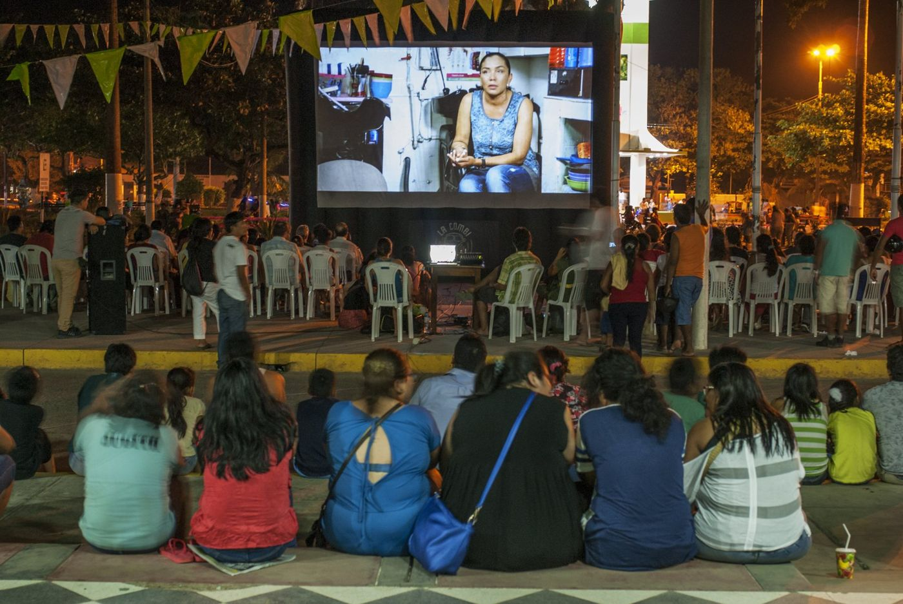

Ver
Cortometrajes de distintos temas, pensados para las áreas de la Educación Básica Regular.
Un espacio donde el alumnado y la comunidad educativa aprenden, reflexionan, se expresan y comparten ideas a través del cine. Películas para reforzar los contenidos y valores del currículo, cada una con su ficha de actividades, y tutoriales para pasar de espectadores a creadores.

Cortometrajes de distintos temas, pensados para las áreas de la Educación Básica Regular.
Cada película tiene una ficha para que el profesorado profundice en sus contenidos con el grupo.
Tutoriales y manuales de técnicas audiovisuales para docentes y estudiantes.
Fuera del horario de clase, el alumnado se reúne, programa películas, abre debates y aprende a gestionar su propio cineclub.
Un abuelo intenta enseñar a su nieto a fabricar nubes, pero el niño tiene sus propias habilidades.
Ficha de actividades (PDF) →Pillcopata, en la selva del Cusco, contada en un corto hecho por niñas y niños de la localidad.
Ficha de actividades (PDF) →Basada en la mitología ayorea de Bolivia: la abuela grillo es dueña de la lluvia y reforesta con su canto.
Ficha de actividades (PDF) →Binta, una niña de siete años de una aldea de Senegal, va al colegio; su prima Soda no tiene la misma suerte.
Ficha de actividades (PDF) →Niñas y niños del valle de Kosñipata conviven con el gallito de las rocas, ave nacional del Perú.
Ficha de actividades (PDF) →Una madre le trae un regalo a su hijo, absorto en los videojuegos, que acaba abriéndolo tras su insistencia.
Ficha de actividades (PDF) →Mariana, de 10 años, sufre el acoso escolar de Isabel, tres años mayor, y decide seguirla hasta su casa.
Ficha de actividades (PDF) →Eusebia se muda de la Amazonía a Belén, en Iquitos, para ir a la escuela, pero tiene que trabajar y nunca aprende a leer ni a escribir.
Ficha de actividades (PDF) →Por qué llegan las nubes desde las yungas al cielo de Quico y por qué son tan importantes. Una cápsula del DAC quechua.
Ficha de actividades (PDF) →Videoclip de animación sobre la igualdad en las tareas domésticas.
Ficha de actividades (PDF) →Una niña invidente sufre un robo mientras pasea con su perro lazarillo, que vive una aventura para protegerla.
Ficha de actividades (PDF) →Documental sobre los obstáculos que enfrentan las niñas y adolescentes en colegios urbano-marginales y rurales del Perú.
Ficha de actividades (PDF) →En un kínder, el profesor dicta cada día qué dibujar, hasta que Vane se muda y empieza en otro kínder.
Ficha de actividades (PDF) →La papa, principal alimento de Quico, se cultiva entre los 3.000 y los 4.000 metros. Una cápsula del DAC quechua.
Ficha de actividades (PDF) →Las hormigas cortadoras Calixto y Elías y su importante papel en el bosque.
Ficha de actividades (PDF) →Sobre la lectura en un mundo donde se lee cada vez menos, y la capacidad de los libros para iluminar la vida.
Ficha de actividades (PDF) →Una niña intenta entender por qué su hermano pequeño, autista, es diferente, y lo cuenta desde su mirada.
Ficha de actividades (PDF) →Los efectos de la contaminación en la naturaleza.
Ficha de actividades (PDF) →La llama Juana y la alpaca Luisa son familia, pero su lana y sus labores son distintas. Una cápsula del DAC quechua.
Ficha de actividades (PDF) →Flor Margarita, Flor María, Lisbeth y José combinan los estudios con las labores del hogar y el cuidado de sus hermanos.
Ficha de actividades (PDF) →El plano general, el americano, el medio, el primer plano… y cuándo usar cada uno.
Descargar PDF →Un juguete óptico: un disco con dos imágenes que, al girar, se funden en una.
PróximamenteLa línea imaginaria de una escena y dónde colocar la cámara para no confundir al espectador.
PróximamenteEl experimento de montaje en el que un mismo rostro cambia de sentido según la imagen que lo sigue.
PróximamentePaso a paso para animar con fotos fijas sucesivas.
Descargar PDF →La técnica del stop motion aplicada a un tren animado.
PróximamenteConsejos y recursos para que el alumnado haga documentales en equipo.
Descargar PDF →Glosario de la A a la Z con los términos más usados del lenguaje audiovisual.
Descargar PDF →Sesiones de dos horas por Zoom para colegios de todo el Perú: cuatro cortometrajes sobre medio ambiente, género, diversidad cultural, derechos humanos, migración o creatividad, y un debate entre estudiantes.
Talleres de cine online para niñas, niños (8 a 12 años) y adolescentes (13 a 16): en ocho sesiones, cada equipo hace su propio cortometraje de 5 a 7 minutos, de la idea a la edición.
¿Te interesa para tu centro? Escríbenos a lacombiarterodante@gmail.com.